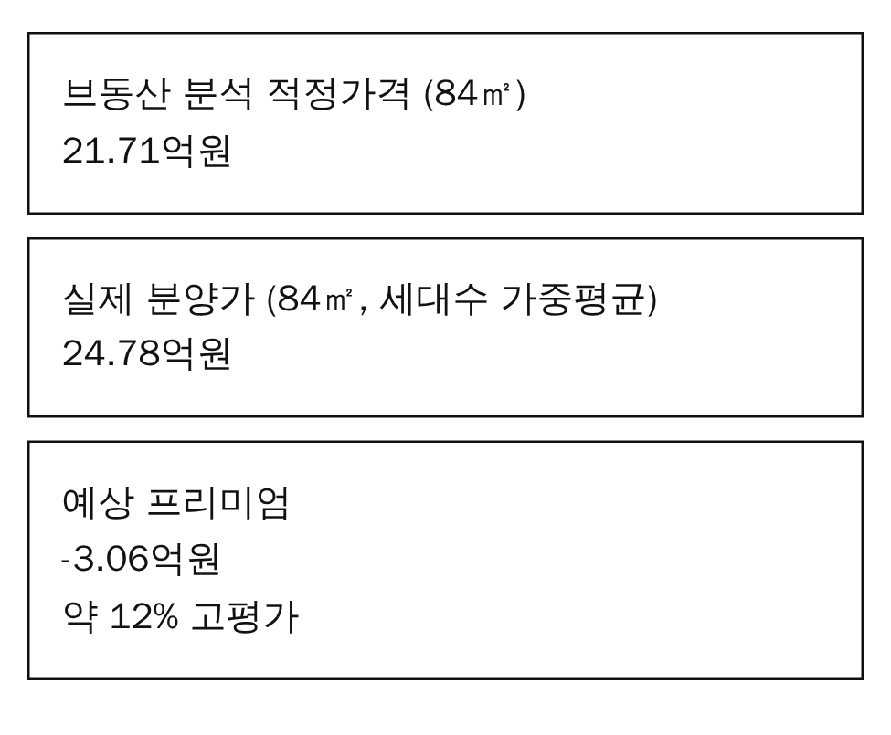
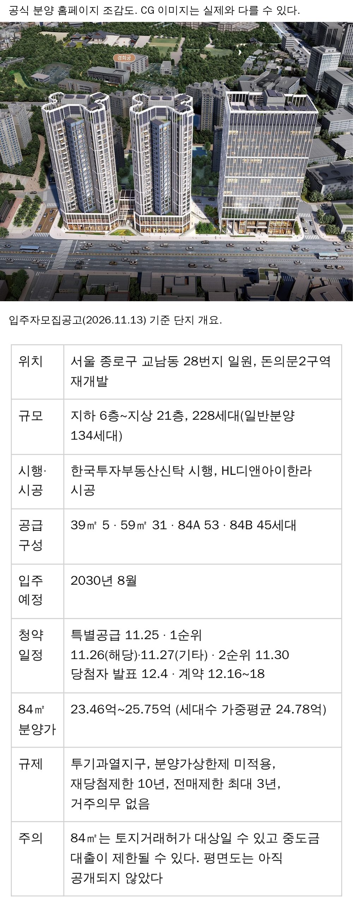
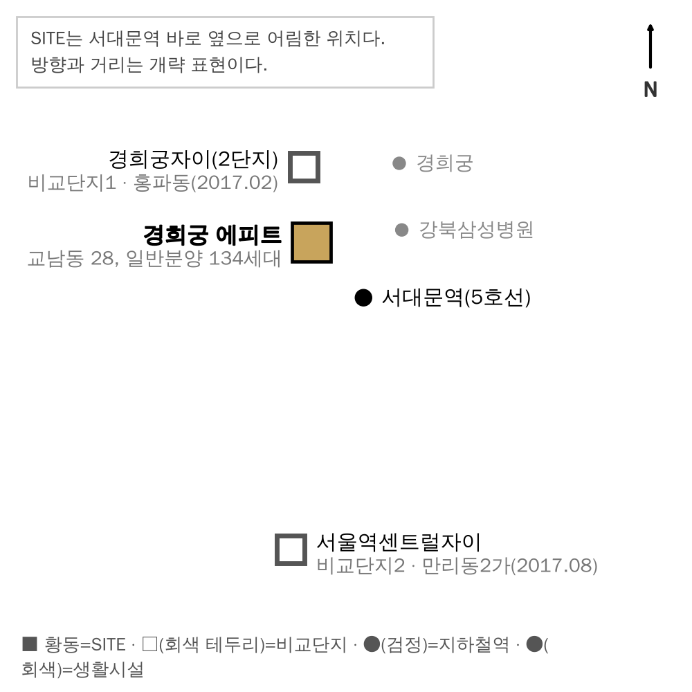
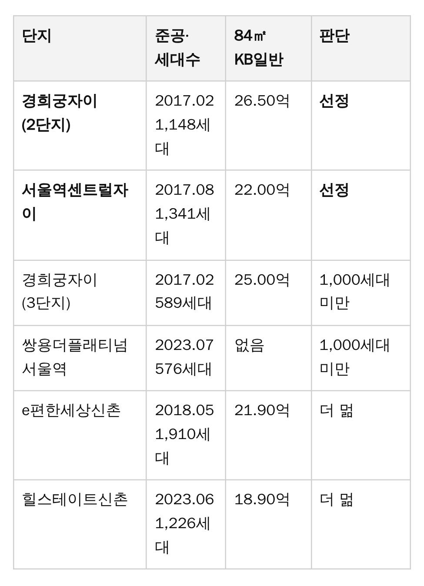
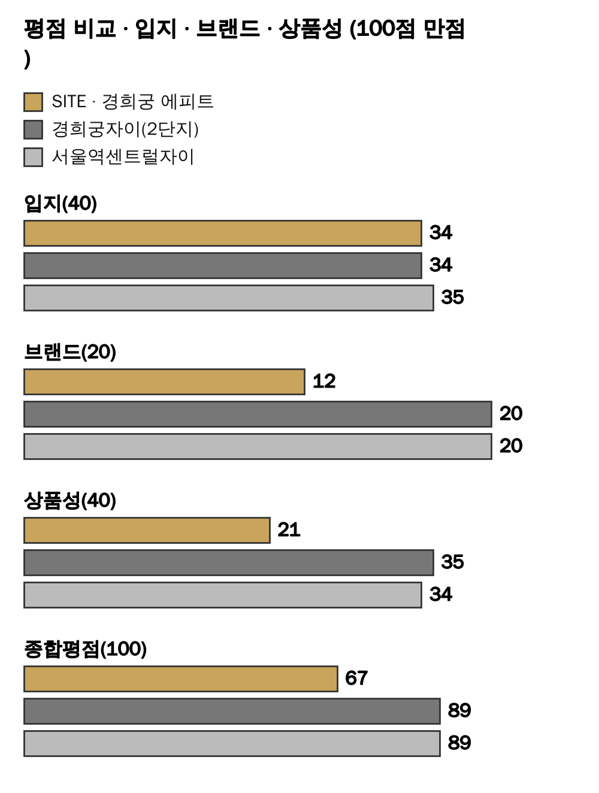
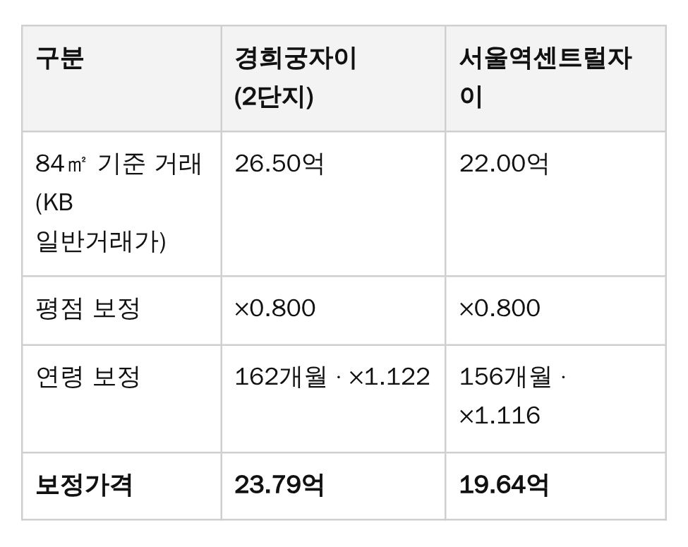
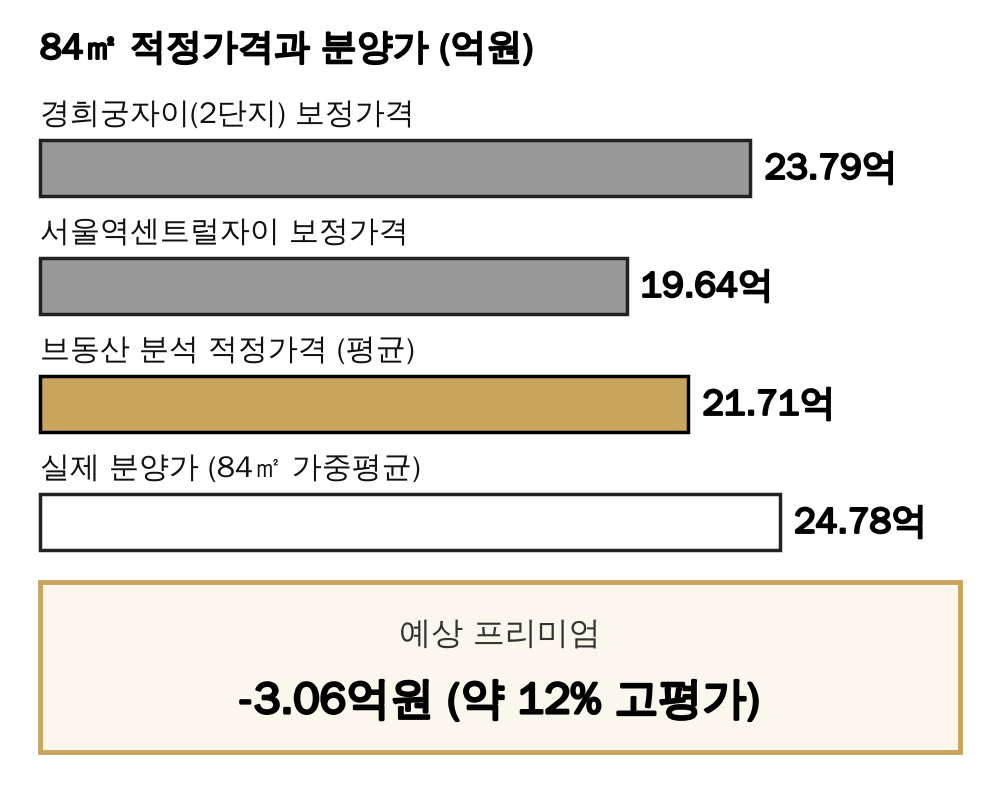
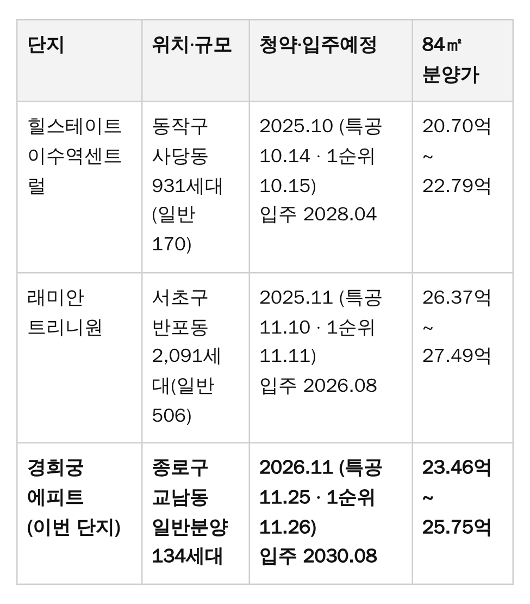
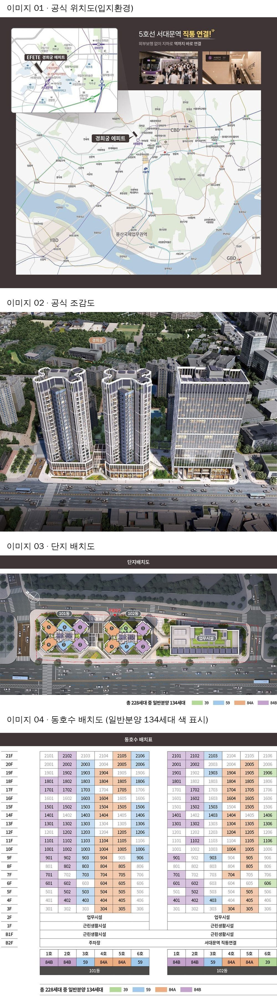
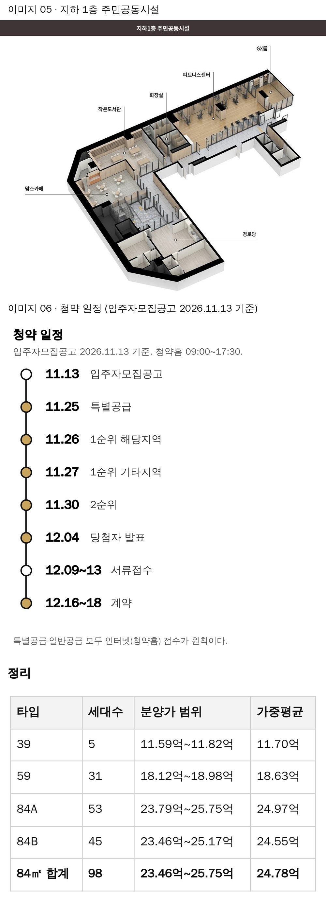

- 제목 복사 → 새 글 제목에 붙여넣기
- 태그 복사 → 태그 칸에 붙여넣기
- 본문 전체 복사 후 본문에 붙여넣기
- 이미지 전체 사진첩에 저장 (공유창에서 '이미지 저장')
- 에디터에서 【사진 번호】 줄을 찾아 그 자리에서 사진 버튼 → 같은 번호 파일 선택 (자리표시 줄은 지우기)
- 카테고리·대표이미지 확인 후 발행
③ 본문 전체 복사
붙여넣을 내용 미리보기
브동산 · 청약 언박싱 No.056 · 2026. 11. 16 (2026.11.13 공고 기준)
경희궁 에피트 | 예상프리미엄 -3.06억, 분양가 총정리
1. 결론부터 — 이 단지 예상 프리미엄은 -3.06억
서울 종로구 교남동 돈의문2구역에 들어서는 재개발 단지, 일반분양 134세대 가운데 전용 84㎡ 98세대를 브동산 모형으로 따져봤다. 분양가가 비교단지 보정 시세를 크게 웃도는 구간이 나왔다.
【사진 01】 · 핵심 수치 박스
브동산이 분석한 이 단지의 적정가격은 21.71억원, 실제 분양가는 24.78억원으로, 예상 프리미엄은 -3.06억원(약 12% 고평가)입니다.
【사진 02】 · 광역 조감도 외 1장
2. 왜 이 가격이 나왔을까 — 입지와 가격 비교
입지: 서대문역 도보권, 사대문 안 초입
단지는 종로구 교남동, 5호선 서대문역 바로 옆에 자리한다. 분양 측은 서대문역 직결과 광화문·시청 접근을 내세운다. 다만 서대문역은 환승역이 아니라 교통 점수에 만점을 주지 않았고, 입지 점수는 40점 만점에 34점이다.
【사진 03】 · 위치 개략도
SITE·비교단지·역·생활시설 위치를 표시한 브동산 자체 제작 개략도. SITE 위치와 거리는 어림한 값이며 실제 지도와 다를 수 있다.
서대문역 직통 통로의 구조와 개통 시점은 확인하지 못했다. 배정 초등학교도 입주자모집공고에 나오지 않아 단정하지 않았다.
비교단지: 경희궁자이(2단지) · 서울역센트럴자이
종로·중구·서대문구에서 2016년 이후 준공, 500세대 이상 단지를 훑은 뒤 1,000세대 이상 대단지를 서대문역에서 가까운 순으로 두 곳 골랐다. 가격이 높은지 낮은지는 기준에 넣지 않았다. 경희궁자이(2단지)는 2017년 2월 준공·1,148세대·KB 84㎡ 26.50억, 서울역센트럴자이는 2017년 8월 준공·1,341세대·22.00억이다.
【사진 04】 · 표
서대문역 직선거리는 경희궁자이(2단지) 약 0.5km, 서울역센트럴자이 약 1.3km, 힐스테이트신촌 약 1.4km, e편한세상신촌 약 1.5km. KB시세 일반거래가는 기준일 2026.11.13 값이다.
두 단지 모두 동·층·향까지 SITE와 맞추지는 못했다.
【사진 05】 · 평점 비교표
입지 40점·브랜드 20점·상품성 40점, 100점 만점 기준 브동산 모형 자체 산정.
종합평점은 SITE 67점, 경희궁자이(2단지) 89점, 서울역센트럴자이 89점. SITE의 점수가 22점 낮아서 비교단지 시세를 두 곳 모두 최대 한도인 20%씩 깎아서 반영했다.
【사진 06】 · 표
연령 보정은 SITE 입주예정월(2030.08)과 비교단지 준공월의 차이에 서울·수도권·광역시 공식(최대 1.2배)을 적용했다.
참고로 경희궁자이 2단지 전용 84㎡의 최근 실거래는 2026년 6~11월 26억~27.7억원 사이이고, 가장 최근인 11월 2일(21층) 거래는 27.5억원이다(국토교통부 실거래가를 집계한 공개 사이트 기준, 정확한 값은 실거래가 공개시스템에서 확인). 이번 평균 분양가 24.78억원은 그보다 약 2.7억원(약 10%) 낮다. 다만 모형은 SITE와 비교단지의 규모·브랜드 점수 격차(67점 대 89점)를 반영해 시세를 깎아 적용하므로, 분양가가 인근 시세보다 낮은데도 예상 프리미엄은 마이너스로 나온다.
두 보정가격은 23.79억과 19.64억, 평균인 브동산 분석 적정가격은 21.71억원. 실제 분양가 24.78억원과의 차이가 곧 예상 프리미엄 -3.06억원(약 12% 고평가)이다.
【사진 07】 · 적정가격 그래프
비교단지 2곳의 보정가격 평균이 SITE의 브동산 분석 적정가격. 전용 84㎡ 총액 기준.
3. 브동산 한줄평
예상 프리미엄 -3.06억 — 분양가가 적정가격보다 3억 넘게 높다. 청약 자격이 되더라도 가격부터 따져보고 넣어야 한다.
공고 전 글에서는 적정가격이 22.2억원이었다. 입주 시기가 2030년 8월로 확정되고 비교 시세를 KB 일반거래가로 바꾸면서 21.71억원이 됐다. 분양가는 같은 생활권 경희궁자이(2단지) KB 26.50억보다 1.72억 낮지만, 대기업 대단지와의 평점 22점 차이를 반영하면 싼 가격이 아니다.
사대문 안 소규모 신축이라는 희소성과 서대문역 직결이 이 가격을 받쳐 줄지는 접수 결과를 봐야 알 수 있다. 84㎡는 투기과열지구 중도금 대출 한도와 토지거래허가 여부까지 확인해야 한다. 청약 자격과 자금 계획은 공고문으로 직접 확인해야 한다.
4. 서울권 최근 분양단지, 84㎡는 얼마였나
비교 감을 잡을 수 있도록 서울에서 최근 분양한 단지 두 곳의 전용 84㎡ 분양가를 옮겨 적었다. 규제와 입지, 분양 시기가 서로 달라 가격 수준만 참고용으로 읽어야 한다.
【사진 08】 · 표
최초 분양가 기준이며 발코니 확장비·유상옵션·취득세는 제외. 래미안 트리니원은 분양가상한제 적용 단지이고 힐스테이트 이수역센트럴은 공고 당시 분양가상한제 미적용이었다. 두 단지 값은 브동산이 청약홈 입주자모집공고(2025000430, 2025000527)로 정리한 글에서 옮겼다.
동작구 힐스테이트 이수역센트럴은 20억 7천만~22억 8천만 원대, 반포 래미안 트리니원은 상한제로 26억 4천만~27억 5천만 원대였고, 이번 단지는 23억 5천만~25억 8천만 원대입니다.
5. 분양 사이트 자료로 한 번에 보기
위치 → 조감도 → 배치도 → 동호수 배치도 → 커뮤니티 → 청약 일정 순서로 이미지만 이어 붙였다. 타입별 평면도는 공식 홈페이지와 공고문에 아직 올라와 있지 않다. 설명은 맨 아래에 모아 정리했다.
【사진 09】 · 위치도 외 3장
【사진 10】 · 커뮤니티 외 2장
공고문의 층별 공급금액과 세대수로 계산한 값. 발코니 확장비(84㎡ 3,500만원, 59㎡ 2,500만원, 39㎡ 1,500만원)·유상옵션·취득세는 포함하지 않았다.
84㎡ 가중평균 분양가는 24.78억원, 84A가 53세대로 가장 많다. 일반분양 134세대 가운데 특별공급이 72세대, 일반공급이 62세대이고 84㎡ 일반공급은 44세대뿐이다. 계약금은 10%(1차 5,000만원, 나머지 15일 이내), 중도금 60%는 2027년 5월부터 2030년 2월까지 6회, 잔금 30%는 입주 때 낸다. 중도금 대출은 총 공급대금의 40% 범위에서 알선할 예정이며 확정은 아니다.
1순위는 서울 2년 이상 거주자가 우선이고 60㎡ 초과 85㎡ 이하는 가점제 70%, 추첨제 30%다. 종로구는 토지거래허가구역이라 최초 계약자는 허가 대상이 아니지만 이후 소유권을 넘길 때는 대지지분 15㎡ 초과 주택형이 허가를 받아야 한다. 84㎡ 대지지분이 약 15.08㎡라 해당될 수 있어 공고문으로 확인해야 하며, 청약 경쟁률은 접수 전이라 알 수 없다.
6. 결론
84㎡ 분양가가 브동산 적정가격보다 3억 넘게 높다(예상 프리미엄 -3.06억). 사대문 안 신축이라는 희소성만 보고 서두르기보다 가격과 대출·토지거래허가 조건부터 확인하자.
자세한 평가표와 적정가격 산출 과정은 브동산 홈페이지에서 확인하실 수 있습니다.
본 글은 정보 제공 목적이며 투자 권유나 청약·매수 대행이 아니다. 실제 청약·계약 전에는 청약홈 입주자모집공고와 공식 안내를 확인해야 한다.
④ 사진 자리표시 ↔ 파일




















- 카테고리: 부동산이야기
- 제목 · 태그 입력 확인
- 대표 이미지(썸네일): aerial-2.jpg, site-layout.jpg
- 【사진】 자리표시 줄이 모두 지워지고 사진으로 바뀌었는지 훑어보기
- 발행 버튼